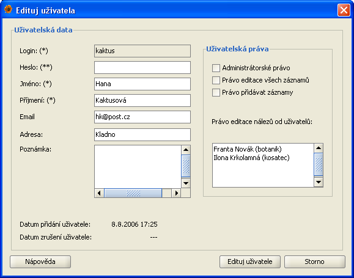
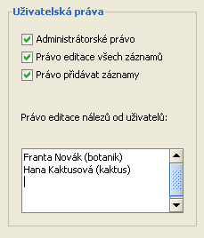

Správa uživatelů
Správce uživatelů umožňuje administrátorovi přidávat a editovat uživatele, nastavovat práva uživatelů a také ukončovat jejich přístup do aplikace.
Správce uživatelů otevřete z menu Data/Správa uživatelů.
Dialog správce uživatelů
Dialog pro správu uživatelských účtů je rozdělen do dvou částí:
- Seznam uživatelů - zobrazení seznamu uživatelů podle kriterií zadaných pro vyhledávání a setřízení
- Vyhledávání - zadání požadavků pro vyhledávání a setřízení uživatelů
Seznam uživatelů
Po úspěšném vyhledávání je v této části zobrazen seznam vyhledaných uživatelů. Počet uživatelů zobrazených v tabulce si můžete sami nastavit přepsáním
hodnoty pro Zobrazit řádků a potvrzením nové hodnoty klávesovým tlačítkem ENTER. V tabulce se přepínáte na další nebo předchozí
seznam uživatelů pomocí tlačítek Předchozí a Následující. Informace o aktuálně zobrazeném seznamu uživatelů jsou uvedeny v části
pod tabulkou.
Pro práci se záznamem jsou zde k dispozici tlačítka:
Vyhledávání
Správce uživatelů nábízí administrátorovi možnost vyhledávat podle čtyř parametrů: login, jméno, email a adresa. Výsledek může být setřízen podle loginu,
křesního jména, příjmení a datumu vytvoření uživatele a to sestupně, nebo vzestupně. Dalším kritériem pro vyhledávání je požadavek zobrazení všech
uživatelů, nebo jen uživatelů s platným přístupem do aplikace (hodnota položky Datum zrušení uživatele je u těchto uživatelů nevyplněna).
Pokud nejsou zadány, žadné parametry a omezení budou vyhledáni všichni uživatelé.
Pozor: při vyhledávání jsou rozlišévána velká a malá písmena (case insensitive).
Přidání uživatele
Dialog pro přidání uživatele
Dialog pro přidání nového uživatele můžete otevřít ze Správce Uživatelů. V zobrazeném okně jsou k vyplnění následující položky:
- Login - login uživatele, který bude používat k přihlašování do aplikace. Tato položka je povinná a bez jejího vyplnění vám aplikace nedovolí
živatele přidat. Login musi být v rámci databáze jednoznačný a není po uložení uživatele editovatelný.
- Heslo - přihlašovací heslo uživatele. Tato položka je povinná.
- Jméno - křesní jméno uživatele. Tato položka je povinná.
- Příjmení - příjmení uživatele. Tato položka je povinná.
- Email - email uživatele. Tato položka je povinná.
- Adresa - adresa uživatele.
- Poznámka - poznámka administrátora o uživateli
- Administrátorské právo - jeho označením získá uživatel stejná práva jako administrátor
- Právo editovat vše - jeho označením získá uživatel právo editovat všechny nálezy v databázy
- Právo přidávat záznamy - jeho označením získá uživatel právo pro přidávání nových nálezů
- Pravo editace nálezů uživatelů - tato položka obsahuje seznam uživatelů, jejichž nálezy bude moci daný uživatel editovat
Editace uživatele
Dialog pro editaci uživatele

Dialog pro editaci existujícího uživatele otevřete ze Správce uživatelů. Nezapomeňte, že pro otevření dialogu musíte mít označeného uživatele.
Vzhled edit dialogu je téměř totožný s add dialogem. Povinné položky jsou: heslo, jméno, příjmení, email.
Needitovatelené položky jsou:
- Login
- Datum vytvoření - datum a čas informující o vytvoření uživatele. Needitovatelná položka.
- Datum zrušení - datum a čas informující o zrušení přístupu uživatele do aplikace. Needitovatelná položka.
Detailní data a práva uživatele
Dialog zobrazující detailní informaci o uživatelovi a jeho právech otevřete ze Správce uživatelů. Pro otevření tohoto dialogu je nutné
označit požadovaného uživatele v seznamu uživatelů. Dialog je téměř totožný s edit dialogem. Všechny položky jsou needitovatelné, mají jen
informační charakter.
Zrušení přístupu uživatele
Pro zrušení přístupu uživatele do aplikace se použije tlačítko Zruš uživatele ve správci uživatelů. Před stisknutím tohoto tlačítka je nutné
označi požadovaného uživatele v seznamu uživatelů. Po stisku tohoto tlačítka bude uživatel informován o operaci, kterou se chystá provést. Potvrzením
této operace bude uživatelovi nastaven aktualní čas do položky Datum zrušení uživatele..
Obnovení přístupu pro zrušeného uživate znamená přidání nového uživatele. V databázi tak zůstává přehled o obdobích, kdy měl který uživatel
přístup do aplikace.
Práva uživatele
Administrátor při přidávání či editaci uživatele nastavuje práva pro práci s nálezovými daty.
Nastavení práv

Uživatel může mít následující práva:
- právo prohlížení dat - toto právo se nikde nenastavuje a uživatel je získává automaticky s vytvořením přístupu do aplikace
- právo přidávat data - nastavením tohoto práva má uživatel možnost přídávat nálezy, autory a publikace. Zároveň má automaticky právo
editovat záznamy, které přidal. Dále má právo na zobrazení historie nálezu, který přidal.
- právo editace data jiných uživatelů - uživatel (Pepa) může požadat administrátora o přidání konkrétního
uživatele (Franty) do senamu uživatelů, jejichž záznamy má právo editovat (s právem editovat záznam je i spojeno právo přistupovat k historii
tohoto záznamu). Přidání uživatelů do tohoto seznamu záleží na administrátorovi a na vzájemné domluvě uživatelů.
- právo editovat vše - uživatel s tímto právem muže editovat jakýkoliv záznam nálezu, autora a publikace bez ohledu na vlastníka tohoto záznamu.
Dále má právo na práci s hisotorií jakéhokoliv nálezu, ale stále nemá právo na práci s celkovou historií.
- právo administrátora - uživatel s právem administrátora má samozřejmě ty nejvyšší práva - může editovat nálezy, metadata, publikace, autory,
rostliny, uživatele. Má právo na historii jednotlivých záznamů, ale i na celkovou historii.